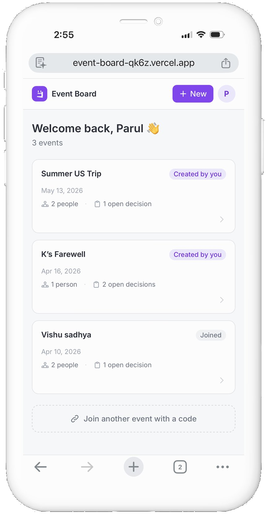
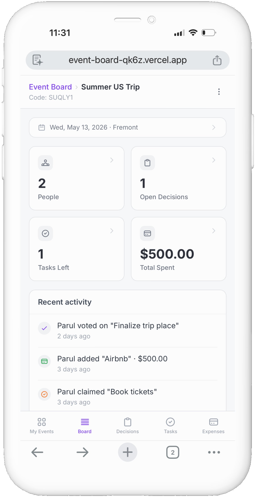

Exploring how AI-assisted development creates space for design thinking.
I love planning events — it's genuinely one of my things. So when a friend announced she was moving countries and we decided to throw her a farewell party, I was already thinking about how to make it work.
And so the familiar chaos began: a WhatsApp thread that starts with "when is everyone free?" and slowly becomes something nobody can navigate. Dates proposed and buried under memes. Someone pins the location. Someone else pins the time. Three days later someone asks what time it starts. We end up typing the same information into the event description, the chat, a note somewhere — and still someone doesn't know who's bringing what.
WhatsApp has polls and events — but polls get buried in the thread, and events only capture what's already decided. There's no working layer in between, where the group figures things out before anything is final. And expenses? Always an afterthought — a screenshot, some mental math, an awkward ask a week later.
I wanted to build that missing layer.
Event Board is a lightweight planning tool for small friend groups. Everyone joins via a shared link — no app download, no account creation friction. Inside, the group can vote on decisions, claim tasks, and log expenses. WhatsApp stays for the banter — Event Board holds the things that actually need to be remembered.


Using AI for implementation meant I could spend my energy on the decisions that actually mattered — what the app should do, how it should behave, and why. I wrote those decisions down as I made them, mostly because I kept hitting forks in the road and wanted to be honest with myself about why I went one way and not the other.
A few of those are worth sharing here.
The original wireframe used the word Polls — it felt natural. You're asking a group to vote; that's a poll.
But WhatsApp already has polls, and they get buried. The problem isn't the mechanism — it's that there's nowhere to see all your open questions in one place, lock them when the group is ready, and connect them to everything else about the event.
Renaming to Decisions also shifted the mental model. Polls implies something ongoing; Decisions implies resolution. When a decision is locked, the winning option is visually highlighted — it transforms from "voting disabled" to "this is what we're doing."
The obvious implementation: once everyone votes, the decision locks automatically.
The problem is late joiners. If someone joins after voting is "complete," they can't participate. Worse, auto-lock assumes voting percentage equals consensus — but in friend groups, silence isn't the same as agreement.
The solution: the event creator locks manually, when the group feels ready. It mirrors how real decisions happen — not by algorithm, but by someone reading the room and calling it.
I initially thought of tasks as a to-do list — the organizer creates items and assigns them to people. Clean, logical, top-down.
But that's not how favors work among friends. Nobody wants to be voluntold. In the self-assign model, the organizer creates unassigned tasks, and participants claim them by tapping "I'll do this" — closer to a signup sheet than an assignment. People follow through more on things they chose.
That reframe changed how the whole feature felt.
I started with localStorage for identity — no login required, your name saved in your browser. Simple, low-friction, good enough to test the concept.
Real testing ended that quickly. A family member opened the link on a different device and couldn't see their tasks from their laptop. Cross-device sync wasn't an edge case — it was the whole point of a shared group tool.
Google authentication had been on the v2 roadmap. It moved to v1.
Solo testing has a ceiling. Auth issues, data freshness, multi-user sync — none of it shows up when it's just you clicking through your own app. It shows up the moment a real person joins from a different device, in a different context than the one you built in.
A few months after building this, I was planning another trip with friends — a real one, not a test. And without really deciding to, I didn't open Event Board.
The conversation stayed in WhatsApp. A date got proposed, a location got pinned, an expense got mentioned in passing and immediately buried — the exact chaos the app exists to solve.
It wasn't that the app didn't work. The decisions, the tasks, the expense tracking all function as designed. It's that WhatsApp was already open, already where everyone was talking, and asking five people to open a second link for one decision was a bigger ask than it sounds.
That's a more useful finding than anything in the build itself: a good standalone tool can still lose to an entrenched habit if it asks people to leave it.
The fix probably isn't a better app — it's meeting people where they already are. A bot that can post "Decision locked: Alaska ✈️" back into the WhatsApp thread, or surface a quick vote without anyone leaving the conversation, would close that gap in a way a separate destination never could.
That's the version I'd actually want to use.
Event Board is live and in active testing. Google OAuth is currently in developer mode, so access is limited to test users for now — the code is open on GitHub for anyone curious how it's built.
{kind=link}
{kind=link}
{kind=link}
{kind=link}
{kind=link}
{kind=link}